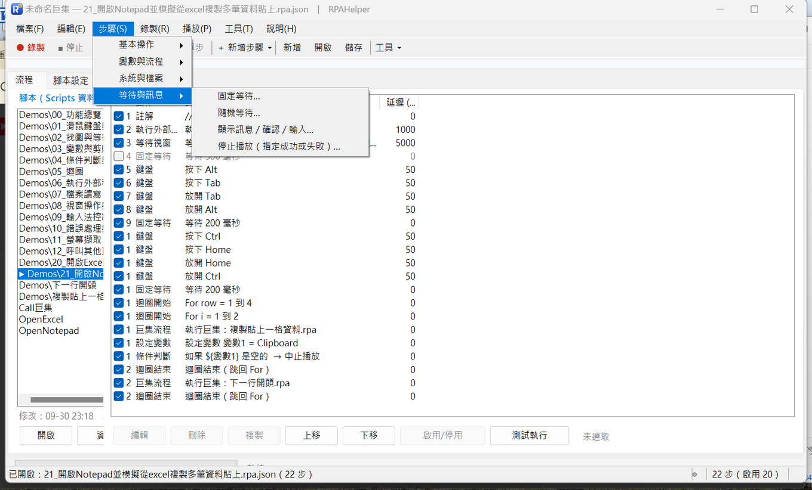

← 回程式設計
← 回影片索引
等對地方，
腳本才換得了電腦
等待與訊息 4 個動作：能用「等條件」就不要用「等時間」
2026/10/01・系列 5／5：等待與訊息
這一類只有 4 個動作，但它們決定腳本是「能跑」還是「跑得穩」：
固定等待、隨機等待、顯示訊息 / 確認 / 輸入、停止播放（指定成功或失敗）。

「步驟」選單的「等待與訊息」分類。相關示範腳本是 10（錯誤處理與結束代碼）。
等待：先求穩，再求快
固定等待是等固定的毫秒數；隨機等待是在一個範圍內隨機（例如 300～900 毫秒），
讓節奏不那麼機械。
最重要的一句：能用「等待視窗／等待圖片／等待程序」就不要用固定等待。
固定等待是在賭那台電腦的速度，換一台機器就可能不夠或浪費；
等條件的動作是「條件到了就走」，慢的機器會等、快的機器不會多等，
同一支腳本才換得了機器。
實測上的經驗值：需要「讓畫面喘一下」時用 200～500 毫秒的隨機等待就夠，
真正不確定的等待交給條件類的動作。
顯示訊息：需要人看一眼的時候
三種形式：提示（只是告知）、是／否確認（結果存變數）、輸入文字（結果存變數）。
這是唯一真的需要有人在旁邊的動作。所以它同時是「無人值守」的分界線：
腳本裡有它，就要有人在；沒有的話，桌面開著讓它自己跑就好。
常見用法：執行到一半要人工判斷的地方停下來問一句；或是拿來當「這支腳本的用法說明」
（執行前先顯示一句「請先把報表開好」）。
停止播放與結束代碼：讓排程看得出成敗
停止播放可以主動結束，並指定這次是成功還是失敗；
這個結果會變成命令列的結束代碼（0 完成、1 失敗或被停止、
2 參數錯誤、3 找不到腳本）。
為什麼重要：交給排程或別的程式呼叫時，結束代碼是唯一的判斷依據。
腳本自己知道「這次的結果不對」時，用「停止播放（失敗）」收尾，呼叫端才看得出來。
步驟失敗時的行為（示範腳本 10）
每個步驟都可以各自指定
找不到／逾時時要怎麼做，只有兩種選擇：
- 跳過並繼續：記錄訊息後直接執行下一步。
- 中止整個播放：停止並回報失敗。
排程執行時建議用「中止」，這樣失敗會回傳非 0 的結束代碼，排程器才看得出異常；
純示範或探索性的腳本才用「跳過」。
舊版的「暫停並詢問我」已經移除——播放中不會再跳出詢問視窗，所以不會有「沒人理它就卡在那裡」的狀況。
舊腳本還留著這個設定值的話，載入時會自動視為「跳過」。
除錯時看哪裡
播放紀錄（Logs\playback.log）與錯誤紀錄（Logs\error.log）會記下每一步的結果與變數值；
播放中「變數」分頁也會即時更新。播放到一半停住時，最有效的一步是真的跑一遍、讀紀錄，
而不是猜。
影片：這一類的優點在畫面上看得到
看不方便的話，也可以 直接在 YouTube 看。這支是 RPAHelper 的實際執行錄影：畫面上同時看得到動作清單，播放後由程式自己跑完，全程沒有人碰鍵盤滑鼠。
對應的示範腳本（工具內建）：10 錯誤處理與結束代碼。 每支都用註解步驟寫清楚在做什麼，可以開啟來對照本文。
本文是工具實作與流程的記錄，不構成任何軟體或服務的推薦。
頁面上的畫面都是實際操作時擷取，未經合成。